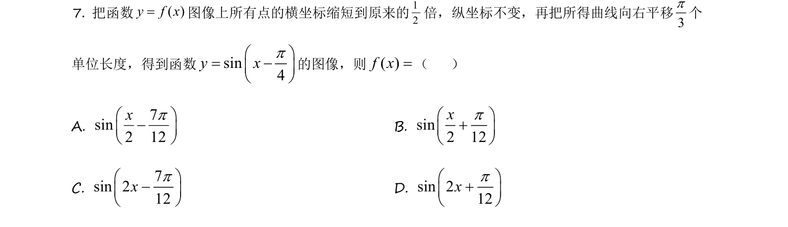
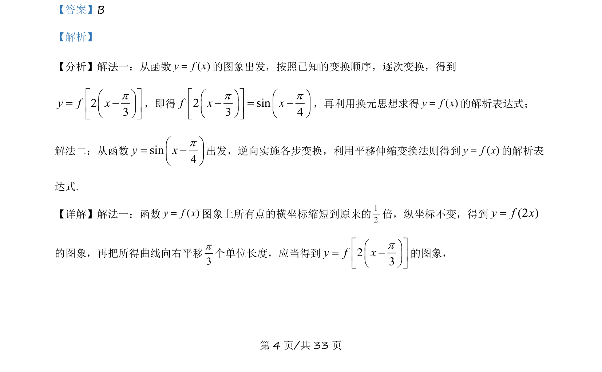
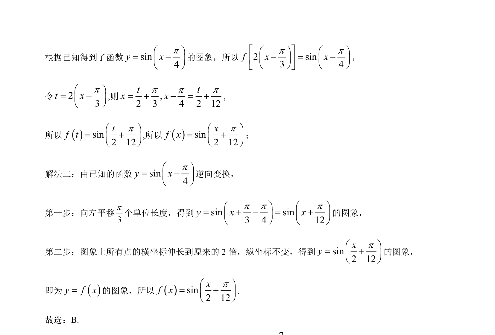

考点：三角函数图象变换 函数解析式 换元思想

考察三角函数的图像变换（伸缩与平移）及逆向还原解析式。


📄 原 PDF 第 4 页：
素材/真题/吉林/2008-2024·（吉林）数学高考真题/2021年高考数学试卷（理）（全国乙卷）（新课标Ⅰ）（解析卷）.pdf
【答案】B 【解析】 【分析】解法一：从函数( )y f x=的图象出发，按照已知的变换顺序，逐次变换，得到 23y f xpé ùæ ö= -ç ÷ê úè øë û ，即得2 sin3 4f x xp pé ùæ ö æ ö- = -ç ÷ ç ÷ê úè ø è øë û ，再利用换元思想求得( )y f x=的解析表达式； 解法二：从函数sin4y xpæ ö= -ç ÷è ø 出发，逆向实施各步变换，利用平移伸缩变换法则得到( )y f x=的解析表 达式. 【详解】解法一：函数( )y f x=图象上所有点的横坐标缩短到原来的12倍，纵坐标不变，得到(2 )y f x= 的图象，再把所得曲线向右平移3p个单位长度，应当得到23y f xpé ùæ ö= -ç ÷ê úè øë û 的图象，